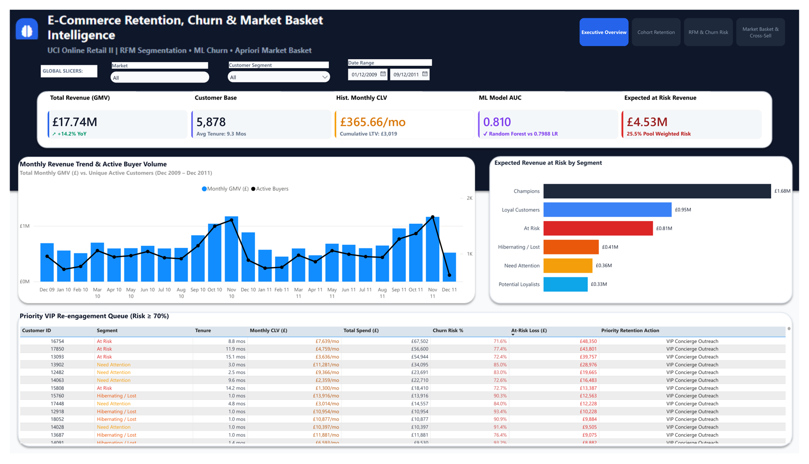

E-Commerce Retention, Churn & Market Basket Intelligence
UCI Online Retail II transactions: cohort retention analysis, RFM segmentation, ML-based churn prediction (Logistic Regression vs Random Forest), and Apriori market basket cross-sell mining, delivered as a 4-page Power BI dashboard.
customers5,878
transactions805,549
churn_auc0.810 (Random Forest)
basket_rules92 (max lift 33.32x)